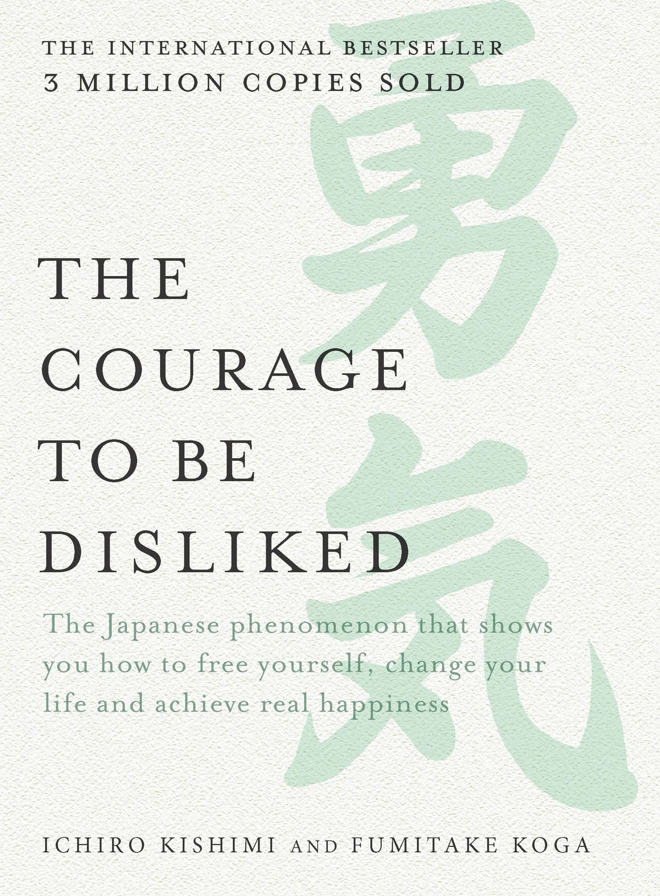
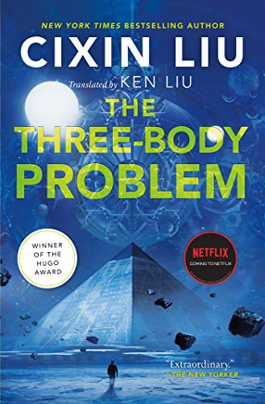
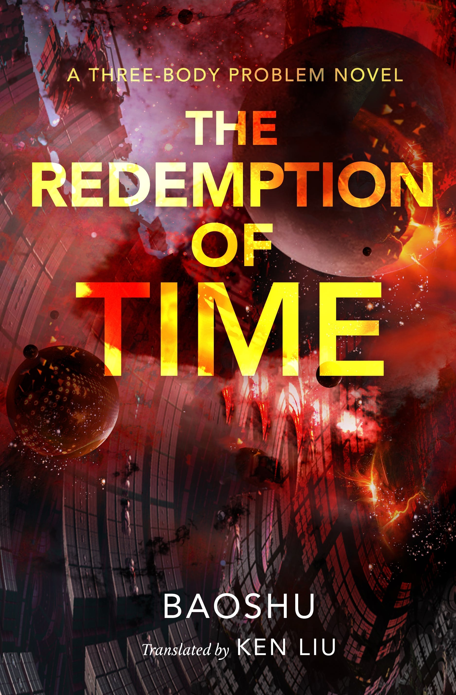

Books Reviews
The Courage to Be Disliked

"The Courage to Be Disliked" by Ichiro Kishimi and Fumitake Koga
is a thought-provoking and transformative book that challenges
conventional notions of happiness and personal fulfillment.
Drawing inspiration from the teachings of the renowned
psychologist Alfred Adler, the authors present a compelling
dialogue between a philosopher and a young man seeking guidance,
offering readers valuable insights into living a fulfilling and
authentic life.
One of the most striking aspects of this book is its format, which
takes the form of a Socratic dialogue. Through the engaging
conversations between the philosopher and the young man, readers
are invited to ponder and question their own deeply ingrained
beliefs about themselves and the world around them. The authors
skillfully navigate complex psychological concepts, making them
accessible and relatable to readers from all walks of life.
The central theme of "The Courage to Be Disliked" revolves around
the concept of freedom and responsibility. The book challenges
readers to take control of their lives by embracing their innate
power to choose their own paths, rather than being trapped by the
shackles of past experiences or societal expectations. This
empowering message serves as a refreshing antidote to the victim
mentality prevalent in today's society.
Throughout the book, the authors shed light on various aspects of
human psychology, including the importance of interpersonal
relationships, the impact of past traumas, and the significance of
self-acceptance. They encourage readers to let go of the need for
external validation and instead focus on building meaningful
connections with others based on mutual respect and understanding.
Furthermore, "The Courage to Be Disliked" offers a compelling
critique of popular psychological theories, such as Freudian
psychoanalysis and behaviorism, while introducing readers to
Adlerian psychology. This unique perspective challenges readers to
view themselves and their lives from a different angle, fostering
personal growth and a deeper understanding of one's own behavior.
While the book is intellectually stimulating and filled with
profound insights, it may not be for everyone. The Socratic
dialogue style, while engaging for some readers, may feel
repetitive or slow-paced for others. Additionally, the concepts
presented can be quite challenging and may require multiple
readings to fully grasp and internalize.
In conclusion, "The Courage to Be Disliked" is an inspiring and
thought-provoking book that encourages readers to embrace their
individuality and take responsibility for their own happiness. It
serves as a powerful reminder that we have the freedom to choose
our perspectives and actions, ultimately shaping the course of our
lives. Whether you are seeking personal growth, a fresh
perspective on psychology, or simply a thought-provoking read,
this book has the potential to transform your outlook and empower
you to live an authentic and fulfilling life.
The Three-Body Problem:1

"The Three-Body Problem" by Cixin Liu is a groundbreaking science
fiction novel that combines intricate scientific concepts,
political intrigue, and a richly imagined world. As the first
installment in the "Remembrance of Earth's Past" trilogy, this
book sets the stage for an epic saga that explores the challenges
and consequences of humanity's encounter with an advanced alien
civilization.
The story unfolds in two timelines, seamlessly blending past and
present. In the backdrop of China's Cultural Revolution, a young
astrophysicist named Ye Wenjie discovers a secret military project
that leads her on a path towards interstellar communication.
Decades later, scientist Wang Miao becomes entangled in a
conspiracy that unravels the mysteries surrounding the enigmatic
Trisolarans and their plan to invade Earth.
Cixin Liu's storytelling is masterful, deftly navigating complex
scientific concepts while maintaining a gripping narrative. From
the exploration of astrophysics and the "three-body problem" to
the intricacies of virtual reality gaming, the author seamlessly
weaves together elements of science and technology that will
captivate readers with a scientific inclination. The book
challenges readers to stretch their minds and grapple with the
mind-bending possibilities of the universe.
The characters in "The Three-Body Problem" are nuanced and
multifaceted, each driven by their own motivations and struggles.
Ye Wenjie, in particular, stands out as a complex and morally
ambiguous character, whose experiences shape the trajectory of the
story. The interactions between the characters, their ideologies,
and their responses to the looming threat of the Trisolarans add
depth and intrigue to the plot.
The world-building in this novel is exceptional. Cixin Liu paints
a vivid picture of both historical and futuristic settings,
immersing readers in a society grappling with the consequences of
technological advancements and the shadow of impending doom. The
intricate political and social dynamics of China add layers of
complexity to the narrative, creating a rich tapestry that
reflects both the strengths and flaws of humanity.
While the book's emphasis on scientific ideas and political
machinations is a source of fascination, some readers may find
that it occasionally detracts from character development or
emotional engagement. The narrative can be dense and demanding,
requiring concentration and patience to fully appreciate its
intricacies.
In conclusion, "The Three-Body Problem" is a remarkable science
fiction novel that pushes the boundaries of the genre. Cixin Liu's
ability to combine complex scientific concepts, political
intrigue, and philosophical musings creates a compelling and
intellectually stimulating narrative. As the first book in the
"Remembrance of Earth's Past" trilogy, it sets the stage for an
epic and thought-provoking exploration of humanity's place in the
universe. Science fiction enthusiasts and readers seeking a
cerebral and immersive experience will find this book a rewarding
and memorable journey.
The Dark Forest: 2

"The Dark Forest: 2" by Cixin Liu is a riveting and intellectually
stimulating sequel to "The Three-Body Problem." Building upon the
foundations laid in the first book, this installment delves deeper
into the complexities of humanity's response to the impending
Trisolaran invasion and explores the psychological and strategic
challenges faced by both Earth and the Trisolarans.
The story picks up after the events of the first book, with the
Trisolaran fleet approaching Earth. As humanity struggles to unite
and prepare for the inevitable conflict, the concept of the "dark
forest" emerges—a metaphorical framework that encapsulates the
dangers of interstellar civilizations and their strategies for
self-preservation. The narrative follows an array of characters,
including Wallfacer strategists, ETO infiltrators, and
astrophysicist Luo Ji, as they navigate the treacherous landscape
of secrecy, trust, and survival.
Cixin Liu's storytelling prowess shines through in "The Dark
Forest." The narrative is intricate and layered, blending
scientific concepts, political maneuvering, and philosophical
contemplation. The author masterfully explores themes of trust,
the nature of humanity, and the lengths to which individuals and
societies are willing to go to ensure survival. The interplay
between personal ambitions and the fate of humanity adds depth and
tension to the plot, keeping readers engrossed from start to
finish.
The characterization in this book is commendable, with each
character exhibiting unique strengths, flaws, and motivations. Luo
Ji, in particular, undergoes a remarkable transformation, evolving
from an unassuming astrophysicist to a key player in the cosmic
game of survival. The interactions between characters are nuanced,
reflecting the complex dynamics of trust, deception, and sacrifice
in the face of an uncertain future.
One of the standout elements of "The Dark Forest" is its
exploration of the psychological and strategic aspects of
interstellar warfare. The concept of the "dark forest" theory
introduces a compelling perspective on the motivations and tactics
of advanced civilizations, raising profound questions about the
nature of communication and the potential risks associated with
contact. The book delves into the psychological toll of living in
a state of constant vigilance and paranoia, providing readers with
a gripping portrayal of the lengths to which individuals will go
to ensure their own survival.
While the novel excels in its conceptual depth and intellectual
engagement, some readers may find the pacing slower compared to
the first book. The intricate plotting and extensive exposition
may require patience and concentration, as the story unfolds at a
deliberate pace.
In conclusion, "The Dark Forest" is a captivating and
thought-provoking sequel that delves into the complexities of
interstellar conflict and the fragile nature of trust. Cixin Liu's
masterful storytelling, coupled with his exploration of scientific
concepts, psychological depths, and strategic maneuvering, makes
this book a worthy successor to "The Three-Body Problem." It
continues to push the boundaries of science fiction and leaves
readers eagerly anticipating the next installment in the trilogy.
For fans of hard science fiction and those who enjoy contemplating
the implications of humanity's place in the universe, "The Dark
Forest" is a must-read.
Death's End: 3

Prepare to embark on an awe-inspiring journey across the cosmos
with "Death's End," the stunning conclusion to Cixin Liu's
"Remembrance of Earth's Past" trilogy. This epic science fiction
masterpiece explores the vastness of space, the inexorable passage
of time, and the profound existential questions that lie at the
heart of our existence.
In this mesmerizing finale, the narrative stretches across
centuries and galaxies, pushing the boundaries of human
imagination. The story follows Cheng Xin, a scientist thrust into
a pivotal role that will determine the destiny of humanity. As the
plot unfolds, readers are treated to mind-bending concepts, cosmic
wonders, and the complex interplay between science, philosophy,
and raw human emotion.
Cixin Liu's storytelling prowess reaches its zenith in "Death's
End." The narrative sweeps us up in a grand tapestry, seamlessly
weaving together intricate scientific theories, existential
contemplations, and gripping personal journeys. It's a testament
to the author's ability to meld intellectual depth with intimate
human struggles, creating a narrative experience that is as
intellectually stimulating as it is emotionally resonant.
At its core, "Death's End" delves into the nature of
civilizations, their rise and fall, and the choices that shape
their ultimate fate. Cixin Liu presents a panoramic view of cosmic
society, grappling with the weight of survival and the sacrifices
required to ensure continuity. The book forces us to ponder the
consequences of our actions, the ethical complexities of long-term
survival, and the fragility of life amidst the vast expanse of the
universe.
Cheng Xin takes center stage in this installment, her journey
through time and space serving as the emotional anchor for the
narrative. Her personal growth, moral dilemmas, and the burden of
responsibility propel the story forward, evoking both admiration
and empathy from readers. Supporting characters, such as the
enigmatic Luo Ji and the steadfast Zhang Beihai, add layers of
complexity and depth to the overall tapestry.
While "Death's End" continues to explore profound ideas and expand
the series' scope, the pacing may feel leisurely to some readers.
The intricate scientific and philosophical discussions, combined
with the expansive narrative canvas, demand patience and a
willingness to fully immerse oneself in the rich tapestry of
ideas.
In conclusion, "Death's End" stands as a monumental and
intellectually captivating conclusion to the "Remembrance of
Earth's Past" trilogy. Cixin Liu's ability to blend intricate
scientific concepts, philosophical musings, and compelling
storytelling is nothing short of remarkable. It's a novel that
leaves an indelible mark on the reader's imagination, provoking
introspection about our place in the universe, the choices we make
as a species, and the boundless wonders that lie beyond our reach.
"Death's End" solidifies Cixin Liu's status as a visionary master
of hard science fiction and will undoubtedly leave readers in awe
of the vast possibilities that lie within the cosmos.
The Lord of the Flies

"The Lord of the Flies" by William Golding is a haunting and
thought-provoking novel that explores the inherent darkness within
human nature. Set on a deserted island, the story follows a group
of boys who find themselves stranded without adult supervision. As
they attempt to establish order and survive, their descent into
savagery and chaos raises profound questions about the fragile
balance between civilization and the innate instincts that lurk
beneath.
Golding's masterful storytelling paints a vivid picture of the
boys' struggle for power and control. The characters, each
representing different facets of human nature, are skillfully
crafted and evolve throughout the narrative. From Ralph, the
rational and democratic leader, to Jack, the charismatic and
ruthless antagonist, the dynamics among the boys reflect the
complexities of human behavior when faced with adversity and the
absence of societal restraints.
The novel's allegorical nature adds depth to its exploration of
human nature. The island itself becomes a microcosm of society, as
the boys' actions mirror the vices and virtues of the adult world.
Themes of power, morality, and the destructive potential of
unchecked impulses are woven into the fabric of the story,
inviting readers to reflect on the darker aspects of humanity and
the thin veneer that separates civilization from savagery.
Golding's prose is both evocative and atmospheric, immersing
readers in the tropical island setting and the boys' deteriorating
psychological state. The vivid descriptions and symbolic imagery
contribute to a sense of mounting tension, capturing the growing
unease and impending tragedy that unfolds. The novel's pacing is
deliberately slow at times, allowing for a deep exploration of the
characters' psyche and the moral dilemmas they face.
"The Lord of the Flies" is a timeless and powerful novel that
continues to resonate with readers. Its exploration of human
nature and the fragility of civilization serves as a cautionary
tale, reminding us of the precarious balance between order and
chaos. The profound themes it tackles and the unsettling questions
it raises leave a lasting impact on readers, encouraging
introspection and critical examination of our own capacity for
darkness.
While some readers may find the novel's bleakness and disturbing
imagery unsettling, its purpose is to provoke thought and shed
light on the inherent struggles within humanity. It serves as a
stark reminder of the potential consequences when societal
structures erode and primal instincts take hold.
In conclusion, "The Lord of the Flies" stands as a literary
masterpiece that delves into the dark recesses of human nature.
William Golding's skillful storytelling, vivid imagery, and
allegorical depth combine to create a haunting narrative that
challenges our understanding of morality and the precarious
balance between civilization and savagery. This classic novel
continues to captivate readers with its timeless themes and serves
as a stark reminder of the fragility of societal order.
The Redemption of Time: A Three-Body Problem Novel: 4

"The Redemption of Time" is a highly anticipated addition to the
acclaimed "Three-Body Problem" series by Cixin Liu. As the fourth
novel in the series, it carries the weight of high expectations,
and fortunately, it delivers a thought-provoking and gripping
narrative that expands upon the complex and awe-inspiring universe
introduced in the previous books.
Cixin Liu, known for his visionary storytelling and masterful
blend of science fiction and philosophy, continues to demonstrate
his prowess in "The Redemption of Time." The story picks up where
the trilogy left off, immersing readers in a world where humanity
grapples with the enigmatic Trisolaran civilization and the
existential threats they pose.
While the original trilogy explored humanity's encounters with the
Trisolarans and the subsequent chaos, "The Redemption of Time"
takes a unique approach by shifting perspectives to focus on the
life and experiences of Cheng Xin, one of the central characters
from the previous novels. Liu skillfully explores Cheng Xin's
internal struggles and the choices she must make to navigate a
complex web of political intrigue and personal dilemmas.
The novel delves deep into themes of redemption, sacrifice, and
the consequences of our actions. It challenges the notion of
absolute morality and grapples with the complexities of morality
in a universe where survival is uncertain. Liu's ability to blend
these weighty philosophical concepts seamlessly into a compelling
narrative is truly remarkable.
"The Redemption of Time" retains the intricate scientific theories
and mind-bending concepts that have become hallmarks of the
series. Liu's exploration of advanced technology, artificial
intelligence, and the possibilities of future civilizations
captivate the reader's imagination. The vivid descriptions and
attention to detail create a palpable sense of wonder and awe.
The pacing of the novel is deliberate, allowing the reader to
savor the intricate plot developments and revel in the
intellectual depth of the story. While it may not have the
breakneck speed of some traditional science fiction thrillers, the
slower tempo contributes to the overall sense of anticipation and
allows the philosophical themes to flourish.
Cixin Liu's prose, masterfully translated by Ken Liu, remains
evocative and lyrical. The language is rich, painting vivid
imagery and capturing the profound emotions of the characters. The
translation successfully preserves the essence of the original
Chinese text, ensuring that English-speaking readers can fully
appreciate the depth and beauty of Liu's writing.
One potential drawback of "The Redemption of Time" is its reliance
on prior knowledge of the "Three-Body Problem" trilogy. While it
can be read as a standalone novel, the full impact of the story
and the richness of the characters are best experienced with the
context provided by the previous books.
In conclusion, "The Redemption of Time" is a remarkable addition
to the "Three-Body Problem" series that will both challenge and
captivate fans of the trilogy. Cixin Liu continues to demonstrate
his mastery of science fiction, blending grand ideas with
intricate character development. With its philosophical depth,
awe-inspiring concepts, and skillful storytelling, this novel
solidifies Liu's position as one of the genre's most visionary
authors.


{kind=link}